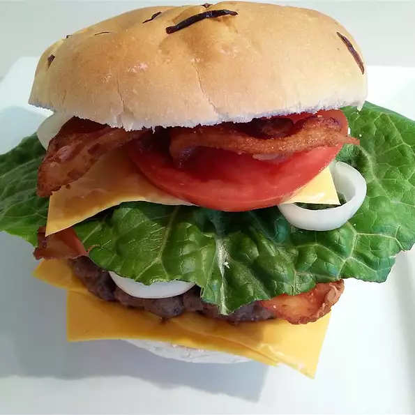

Juiciest hamburgers ever

Ingredients
- 2 pounds ground beef
- 1 egg, beaten
- 3/4 cup dry bread crumbs
- 3 tablespoons evaporated milk
- 2 tablespoons Worcestershire sauce
- 1/8 teaspoon cayenne pepper
- 2 cloves garlic, minced
Steps
- Preheat a grill for high heat.
-
Mix the ground beef, egg, bread crumbs, evaporated milk,
Worcestershire sauce, cayenne pepper, and garlic in a large bowl
using your hands. Form the mixture into 8 hamburger patties
-
Lightly oil the grill grate. Grill patties until browned and no
longer pink, about 5 minutes per side.